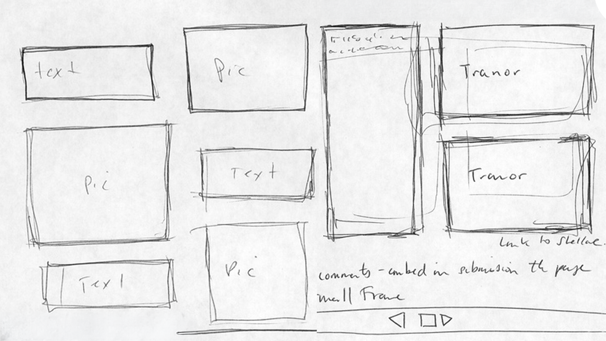
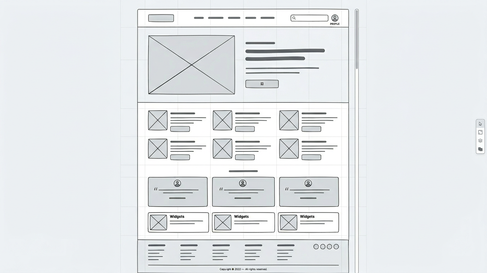
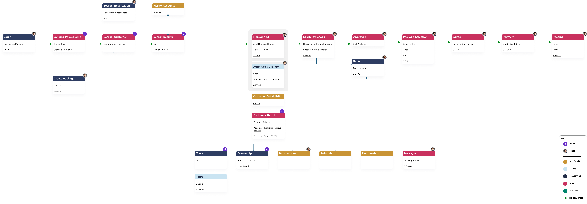
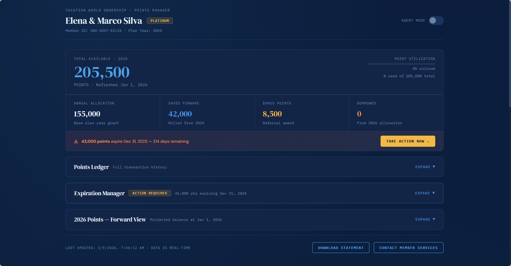

Background
I compiled this list to remind myself, and to help other designers review the range of tools available for answering design questions.
Design is about making thinking visible. The artifacts we create should help us communicate clearly—whether we’re sharing ideas with participants in a study or with engineers who will eventually build the product.
This is the story of how we audited what existed, defined what it needed to do, and rebuilt it without breaking the workflows of 40,000 active users.
| Goal | Artifact | Rationale |
|---|---|---|
| Understand Context | Storyboards, user journeys, service blueprints, interviews | These capture people, context, and pain points without locking into a UI solution too early; mockups and prototypes can hide upstream problem issues behind shiny screens |
| Test Value Proposition | Concept narrative, “press release,” low‑fi mocks, or a simple fake door | Validates, not usability; simple representations are faster and avoid bias from visual polish. |
| Compare concepts | Sketches, annotated wireframes, storyboards | Low‑fi lets you rapidly contrast mental models and flows without sunk-cost bias toward one polished option. |
| Evaluate Usability | Mid/high‑fi clickable prototype | Realistic click-through of a specific flow is needed to see task success, errors, and navigation issues; static screens can’t show sequential friction. |
| Construct IA/Navigtaion | Card sorting, tree testing, wireframe flows, low‑fi click-through | IA questions are about labels and structure; they can be answered cheaply without full visual/interaction fidelity. |
| Explore Interaction | High‑fi clickable or coded prototype of specific flow(s) | Micro-interactions, validation, and states need realistic behavior to evaluate properly. |
| Investigate Desirability | Static mocks, concept video, storyboard, narrative | Focus is on emotional and aesthetic response; interactivity adds little compared with visuals and story. |
| Discuss Feasibility | Wizard‑of‑Oz setup, technical spike/POC, minimal UI | Core risk is system capability, not UI; UX prototypes alone can give false confidence if tech isn’t viable. |
| Establish Alignment, strategy, and scope | Storyboards, user journeys, concise narrative + a simple prototype | A shared story across channels and roles is more effective than only showing screen sequence. |
Hand Drawn Sketches
Fast, informal drawings of ideas, screens, or flows on paper/whiteboard.
When To Use
- Earliest discovery and ideation.
- When uncertainty is high and you want volume and variation of ideas.
- Collaborative workshops with stakeholders or engineers.
To Learn
- Different solution directions and mental models.
- High-level flow options and layout ideas.
- Where stakeholders or users gravitate conceptually.
Caveats
- Harder for some stakeholders to interpret.
- Not suited to detailed usability or brand questions.

Wireframes
Simplified layouts that focus on structure, hierarchy, and navigation, usually grayscale and minimal styling.
When to Use
- Early to mid discovery.
- When the problem is understood and you’re shaping IA and layout.
- Comparing different structures before visual design.
To Learn
- Information hierarchy and content priority.
- Navigation clarity and rough flow.
- Content requirements and feature grouping.
Caveats
- Limited insight into emotional response or brand fit.
- Some stakeholders treat them as “ugly final designs” and misjudge them.


Storyboards
Sequential frames (like a comic strip) showing a user, their context, and interaction with the product over time.
When to use
- Problem framing and concept storytelling.
- Explaining how a feature fits into a day-in-the-life.
- Aligning cross-functional teams on user scenarios.
To Learn
- Context of use, triggers, and outcomes.
- Emotional highs and lows along the journey.
- Whether a concept is meaningfully improving the story.
Caveats
- Not interactive; doesn’t expose detailed usability issues.
- Can over-focus on “happy path” if you don’t depict edge cases.
Static Screen Mockups
High- or mid-fidelity visual designs of screens without linked interactions
Usage
- When you want feedback on visual direction, brand, and content.
- Reviewing copy and information density.
- Precursor to building a clickable prototypes
To Learn
- Visual hierarchy and scannability.
- Emotional and brand response.
- Copy clarity and tone.
Caveats
- No sense of flow or timing.
- an still cause premature convergence (“It looks done”).

User Journeys & Service Blueprints
Maps of steps, touchpoints, channels, emotions, and backstage processes across an end-to-end experience
When To Use
- When experiences span multiple channels/teams (e.g., web + call center + in-person).
- Early strategy and discovery, or when re-architecting services.
- Identifying systemic pain points and handoff issues.
To Learn
- Where the current experience breaks down.
- Which stages matter most for satisfaction or drop-off.
- Which teams/systems must change to improve the journey.
Caveats
- Can be abstract and “high altitude” for stakeholders who prefer screens.
- Risk of becoming documentation that isn’t tied to decisions.

Clickable Prototypes
Linked screens simulating navigation and basic interactions, often in tools like Figma; fidelity can range from wireframes to near-final UI.
Usage
- The core concept and main flow are chosen, and you’re validating how it works.
- You need to test task success, error patterns, and learnability.
- You need realistic walkthroughs for stakeholders.
To Learn
- Usability of end-to-end flows.
- Interaction issues, error states, and navigation breakdowns.
- First-time user understanding and onboarding effectiveness.
Caveats
- Higher time and cost; easy to overscope.
- Aesthetic bias and “it looks done” effect.
- Teams may resist structural changes because they’re encoded in the prototype.
